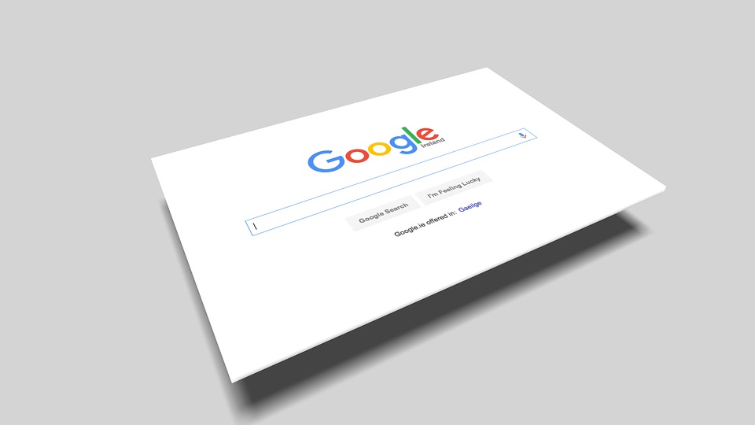

Mi CV
Me costaba encontrar de qué otra cuestión escribir, así que decidí hablar de por qué tomé el curso al ritmo que lo tomé. Creo que explica muchas cosas.
América TV
Empecé a laburar en los medios de caradura que soy y de suerte. Sin contactos, necesitás de los 2 factores
Laburaba en un call center, la verdad que cobraba muy bien y vivía con mis padres. Para ir a estudiar periodismo debía pasar por el canal América, en Palermo, y todos los días saludaba al de seguridad como quien saluda a su portero.
Así fue que un día me acerqué al muchacho de seguridad, CV impreso. Me llamaron a las pocas horas
Era una pasantía, lo que implicaba cobrar 3 veces menos de lo que cobraba en ese momento.
Mis viejos bancaron el momento y después todo se acomodó.
Así empecé, como productor de TV.
Lo digital
Después de otra pasantía por La Nación, producción en CN23 y un programa de Telefé me volqué a lo digital.
Cuando estaba a días de dejar el periodismo, me llegaron dos ofertas: una del sitio minutouno.com y otra de Sportcenter.
Fui a lo digital y creo que es una decisión que marcó mi carrera.
Pasados los años, casi 10 van a ser, sigo ligo a lo digital: empecé como redactor, luego fui editor, más tarde editor general.
Hoy estoy como SEO manager de las .com del Grupo Indalo: m1 y Ámbito Financiero. Y otro proyecto del que no puedo decir mucho, pero me ilusiona y entusiasma.
No empecé en Coder para escribir código el día de mañana, sino más bien para sumar conocimientos.
Llegué acá gracias a un acuerdo de la empresa para la que trabajo y Coderhouse. Acuerdo que agradezco.
Cómo ganar un sorteo
Hablé sobre suerte y empeño al principio. Voy a cerrar de la misma forma: en diciembre vi un curso sobre Python aplicado al SEO, curso bien práctico.
Contra: era en euros.
Empeño: el jueves, mientras laburaba, estaba escuchando en Twitch una entrevista al español que la daba, un flaco al que sigo en Twitter porque siempre da buenos tips sobre SEO.
Sorteaban el curso.
Elpsis: ME GANÉ EL CURSO. Suerte, sí, pero también merecido por no dormirme en laureles y querer seguir aprendiendo.